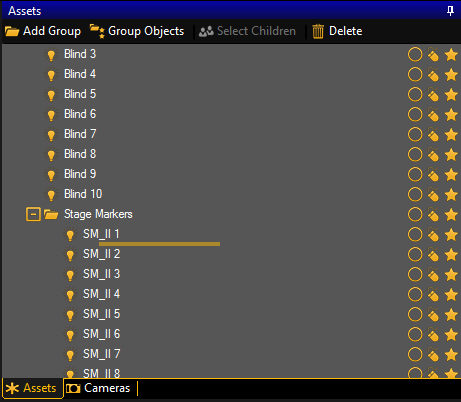
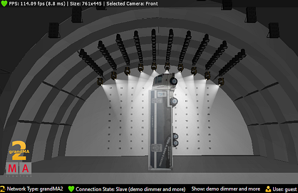

Take over objects into the 3D show.
For more information on how to take over objects into a 3D show see the MA 3D Manual – Media Database.
To control the objects in MA 3D via a stage marker in the grandMA2, import the objects into the 3D:
Click the object in the view Assets on the right of the user interface in the MA 3D and drag and drop it into the fixture Stage Marker in the folder Stage Markers.

Drag and drop object into the fixture in the folder Stage Markers
To display the object that has been linked to the stage marker, click the tab Stage View in the upper left corner below the title bar with icons.

Object linked to a stage marker
For more information on how to control the object via the stage marker see Use stage markers.